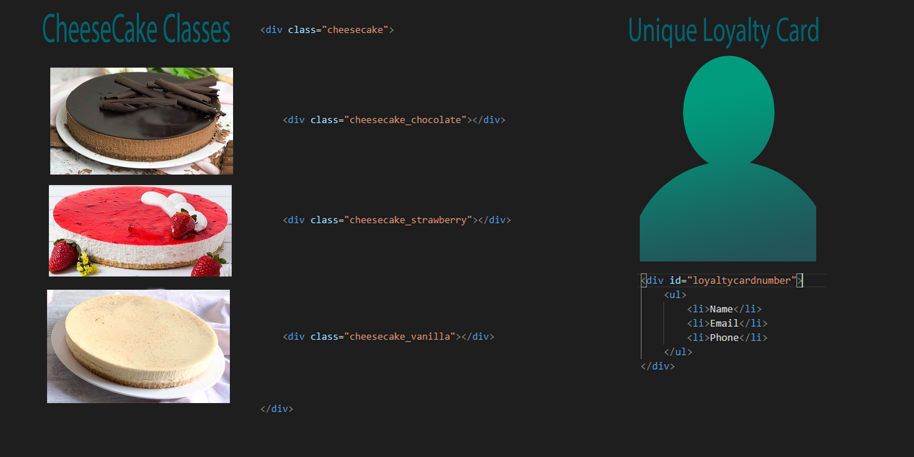

Blog Entries
Tech Blog Post One
The Question of classes vs Id's
I looked over this question as I think its a very important one to be able to understand. When I first started doing some HTML I didnt quite understand what the difference was. This can become a huge problemn if think about it for to long. Especially when starting out. Both of them are known as what we call element selectors.
The best way to describe them would be thinking about your intent and what you want to accomplish. Before adding either a class or an ID selector you should ask yourself whether this item will be unique or if it will be similar to other items. This is a good question to ask when deciding which one to use as it can save you a lot of hassle in the long run.
Do you like cheesecakes?
A great example for a class would be something that would come up numerous times throughout production. A great real world example would be a cheesecake shop, because who doesnt really like cheesecakes. A class would be similar to a type of cake available in the shop. You can have a cheesecake or a torte cake. Each of them would be considered different classes of cakes. When you buy a cheesecake you know it will have cream cheese in it and a crust, toppings could be different depending on the type of cake.

The use of ID's on the otherhand would be the person who purchases the cheesecakes and uses their loyalty card. The loyalty card would be specific to them. It would have their purchasing history, and when they might reach a loyalty points special for 5$ off on the next purchase.
- https://www.codecademy.com/articles/classes-vs-ids
- https://www.tutorialspoint.com/difference-between-an-id-and-class-in-html